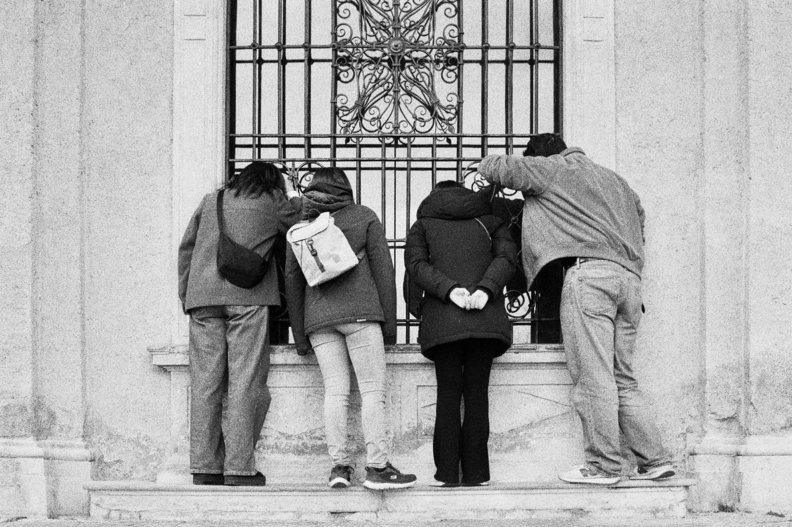
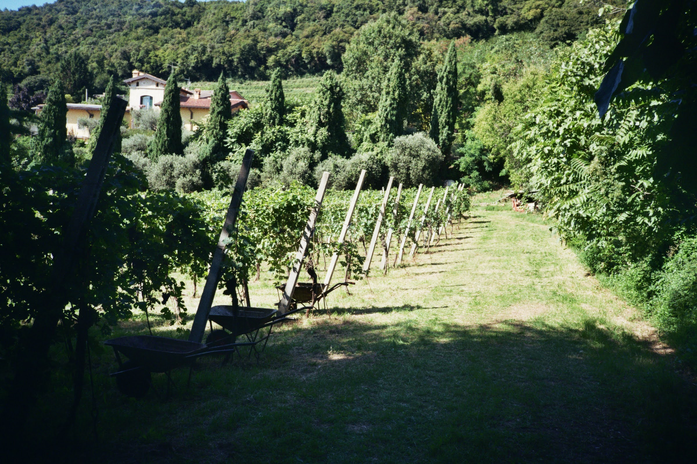
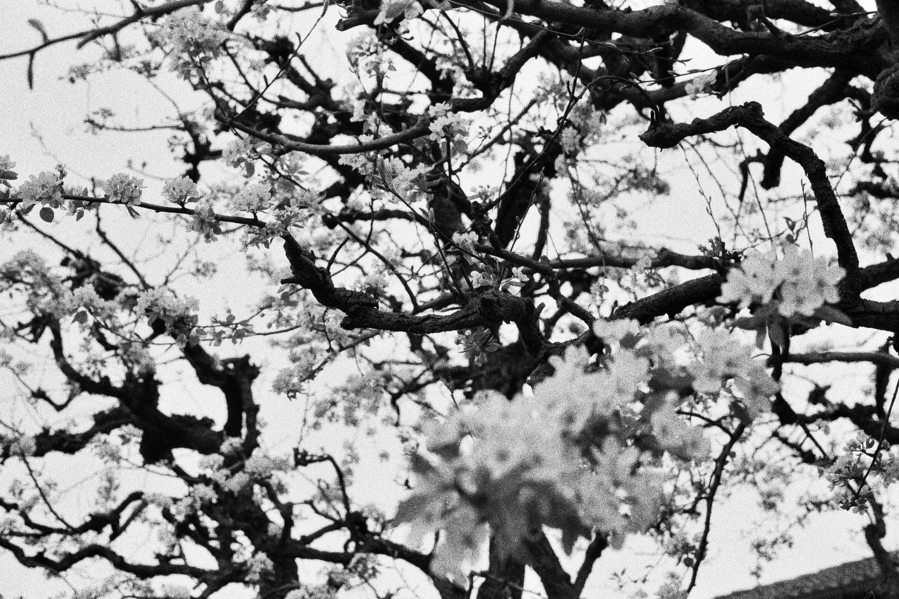

Matteo Picciolini

Due anni fa sono andato a Roma con un gruppo di
amici fisici. Sulla via del ritorno alla volta
di Milano, alcuni di loro hanno fatto richiesta
di fermarsi in un convento di suore clausura
sperduto nell'entroterra laziale, a Vitorchiano,
in provincia di Viterbo.
Qualche mese prima, infatti, una ragazza che
aveva studiato Fisica a Milano,
un paio d'anni più grande di me,
aveva iniziato lì il percorso di noviziato.
Alcuni di noi più legati a lei,
proposero allora di fermarci a salutarla.
Di quello che successe nei minuti successivi ricordo poco:
il saluto alla suora che ci accolse, qualche parola scambiata
all'ingresso, il passaggio attraverso il monastero.
Ricordo invece molto bene il momento in cui entrammo nel
parlatorio.
Eravamo arrivati leggermente in ritardo rispetto
all'orario concordato. Dall'altra parte della stanza,
dietro il bancone che la percorreva per tutta
la sua lunghezza e segnava il confine della clausura,
c'era C. che ci aspettava.
All'ingresso la vidi intenta a spolverare le sedie su cui
ci saremmo seduti da lì a breve. Non c'era, sia chiaro,
alcun bisogno di farlo. Le sedie non erano impolverate,
né sembravano averne particolare bisogno.
Semplicemente, C. voleva che il nostro culo avesse
la miglior seduta possibile tra quelle che il monastero poteva offrirci.
Ricordo di aver pensato: Ma chi, sapendo che un amico passerà
a trovarti per pochi minuti,
mentre è di ritorno da un viaggio di 800 km, si mette a
spolverare la sedia su cui poggerà il culo?
L'attesa, per me, è tutt'altro: una palla al piede del fare frenetico delle giornate.
Quante volte mi è capitato di aspettare un amico, magari in ritardo,
e giudicare quel tempo uno spreco,
finendo magari per alimentare questo
giudizio scrollando sui social proprio
per passare il tempo.
Per C., invece, quel tempo aveva la stessa dignità di quello passato nella preghiera o nei campi. E non è stato nemmeno necessario dirlo: è bastato quel gesto.

Non penso di essere l'unico a cui un comportamento come
quello di C. sia parso diverso. Ma non penso neppure
che sia necessario spingersi fino a Vitorchiano
per imbattersi in qualcosa di simile.
Proprio oggi, aiutavo mia nonna, che era malata da qualche giorno.
Dalla sua camera da letto mi aveva chiesto se potevo
portarle una cosa che avevo comprato poco prima.
Ci ho messo qualche minuto prima di portargliela,
diciamo tra i 5 e i 10 minuti.
Una volta pronto, mi sono presentato alla sua porta,
e già mi immaginavo la scena di lei addormentata
per la stanchezza data da questi giorni di malattia,
o intenta ad ascoltare con attenzione la sua radio sintonizzata
sulle frequenze di radio Maria.
Svoltando l'uscio, invece, vedo lei, piccola come una bambina,
seduta sul letto che aspettava a testa alta nient'altro che me.
Non scrollava, non dormiva, non aspettava come io
sono solito aspettare.
Quando mi ha visto arrivare mi ha accolto con un sorriso,
e con la mano destra dolcemente ha accarezzato la porzione di
lenzuolo accanto a lei per farmi segno di sedermi e
condividere con lei quel momento.
Cos'hanno in comune questi due episodi? Entrambi vivono fuori dalle dinamiche del mondo. In un tempo dove la performance è lo strumento di misura delle capacità, in che altro modo potrei giudicare l'attesa di un ritardatario se non come una perdita di tempo? Eppure, per C. quei minuti prima del nostro arrivo non erano tempo da ammazzare. Per mia nonna, quei pochi minuti in cui mi aspettava non erano un vuoto da riempire. Erano semplicemente tempo. Io, invece, ho continuamente momenti di attesa che cerco compulsivamente di riempire. Piuttosto che affrontare il vuoto di un'attesa che non è in mio potere, anestetizzo quel disagio — perché di disagio si tratta, quando bisogna fare i conti con se stessi — attraverso l'appagamento istantaneo di qualche video fugace. A cosa educa questo? Perché, come dice un mio amico, Tutto educa.
La chiacchierata con C. proseguì ancora per un po'.
A un certo punto cominciò a raccontarci del suo lavoro nei campi.
Da qualche tempo stava piantando la vite, a mano.
Lunghi filari che per i successivi sette anni
avrebbero avuto bisogno di essere innaffiati, curati,
accuditi, prima di poter dare il loro primo frutto.
E anche allora non sarebbe finita: l'uva avrebbe
dovuto essere raccolta e trasformata in vino; il
che avrebbe avuto, naturalmente, i suoi tempi.
C. raccontava tutto questo con una naturalezza disarmante,
come se sette anni fossero un tempo qualsiasi,
quasi non ci fosse nulla di strano nella decisione di attendere tutto quel tempo.

- Questa è scema, ho pensato.
Sia chiaro: quello che sto raccontando non è semplicemente la storia di un ragazzo cresciuto in città che scopre la vita di campagna. Certo, sarebbe scorretto dire che questo non c'entri.
Ma il punto è più profondo, perché, oggi, questa è una questione di scelta.
Forse un tempo non c'era molto da scegliere: la vite si piantava, si curava, si aspettava, per necessità. La vita aveva i suoi tempi e bisognava starci dentro.
Oggi, invece, abbiamo a disposizione un'infinità di modi per fare le cose più velocemente, per ottenere risultati prima, per riempire ogni attesa.
E allora, cosa spinge una persona a piantare una vite
e a prendersene cura per sette anni,
sapendo che solo allora — forse,
se tutto sarà andato bene — potrà
finalmente raccoglierne i frutti?
Che cosa deve vedere uno attraverso quella vigna, ogni giorno, per rispettare quei sette anni di attesa?
Che certezza bisogna avere per non mandare tutto all'aria dopo un giorno, un mese o un anno?
Pero in fiore nelle Langhe.
Un mese fa, un'amica mi ha inoltrato il sito dei monaci della Cascinazza, dove si legge: